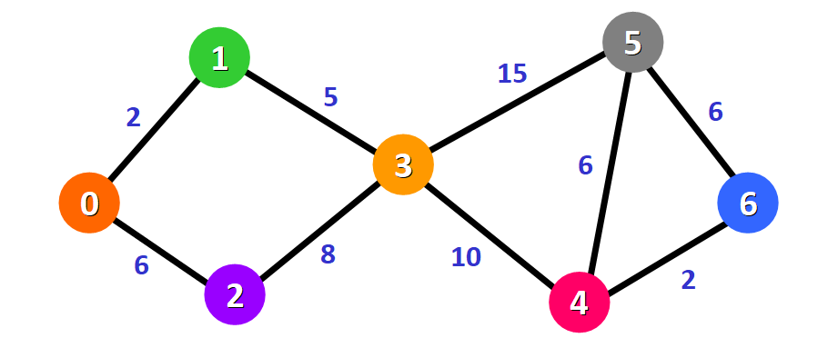
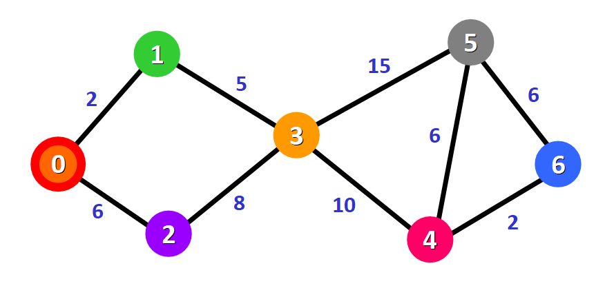
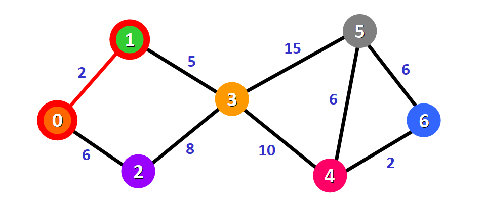
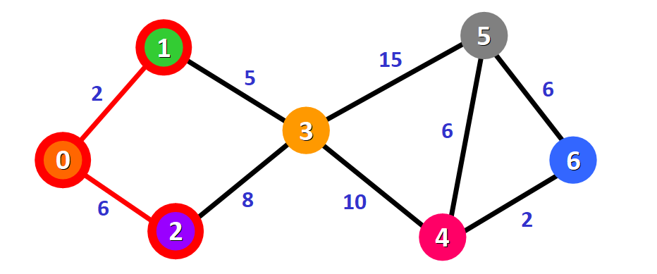
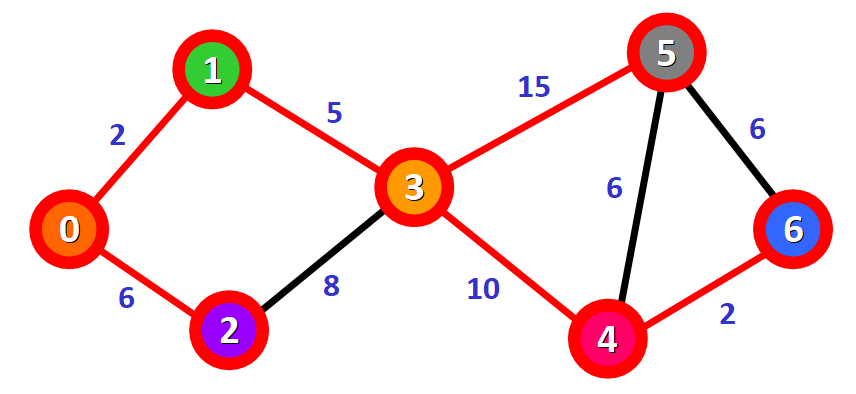

数据结构算法之 Dijkstra 单源最短路径（原理部分）
戴克斯特拉算法（Dijkstra’s algorithm），又称迪杰斯特拉算法、Dijkstra 算法，是由荷兰计算机科学家艾兹赫尔·戴克斯特拉在 1956 年发现的算法。戴克斯特拉算法使用类似广度优先搜索的方法解决赋权图的 单源 最短路径问题。它可以应用于有向图和无向图，常被应用于网络路由、交通规划等领域。但对于带有负权边的图，Dijkstra 算法无法正确计算最短路径，需要使用其他算法，如 Bellman-Ford 算法。
Dijkstra 基本思想
Dijkstra 算法可以计算从图中的一个节点出发到其他所有节点的最短路径。它的基本思想是从源节点开始，通过选择当前距离源节点最近的未访问节点，不断更新和调整节点的最短路径和距离值，直到找到所有节点的最短路径为止。
Dijkstra 算法属于贪心策略（算法执行完后，才能得到全局最优解）。
Dijkstra 具体步骤
Dijkstra 步骤描述
Dijkstra 算法的具体步骤如下：
- 创建一个距离数组
dist[]，用于存储源节点到各个节点的最短路径长度。初始时，将源节点的距离设为 0，与源节点直接相连的节点的距离设为边的权重，其他节点的距离设为无穷大。 - 创建一个标记数组
visited[]，用于标记是否已经访问过该节点。初始时，将源节点标记为已访问，其他节点标记为未访问。 - 以源节点为基准，遍历所有与其相邻的、未访问过的节点，计算「源节点」到这些相邻节点的距离，并从未访问的节点中选择距离「源节点」最近的节点，作为基准节点。
- 以这个基准节点为中间节点，更新从源节点经过中间节点到达其它节点的距离到
dist[]数组中，并将这个基准节点标记为已访问。- 更新的方式是：如果「从新的中间节点」到「该节点」的距离小于原本到它的距离，则更新它的值（你要从这个节点走才更近了哦），并将这个中间节点作为它的前驱节点。
- 重复步骤 3 和步骤 4，直到所有节点都被访问过。
- 最终，
dist[]数组中存储的就是源节点到其他所有节点的最短路径长度。
步骤三中的「相邻」节点包括直接与源节点相邻、通过已访问的节点间接与源节点相邻这两大类。换句话说，也就是
dist[]数组中只要不是无穷大，就与源节点直接或间接相邻。
Dijkstra 复杂度
Dijkstra 算法的时间复杂度为 $O(|V|^{2})$，空间复杂度为 $O(|V|^{2})$，主要为二维邻接矩阵、一维的距离矩阵、访问矩阵、前驱矩阵，其中 $V$ 是点集。
Dijkstra 算法图解
假设有下面这个图：

Dijkstra 算法将会寻找出图中节点 0 到所有其他节点的最短路径。
初始化 dist 数组
创建一个距离数组dist[]，用于存储源节点到各个节点的最短路径长度。初始时，源节点到自己的距离为 0，与源节点直接相连的节点的距离设为边的权重，到其它节点的距离还没有确定，所以先标记为无穷大。
1 | node: [0, 1, 2, 3, 4, 5, 6] |
初始化 visited 数组
创建一个标记数组visited[]，用于标记是否已经访问过该节点。初始时，将源节点标记为已访问，其他节点标记为未访问。
1 | node: [0, 1, 2, 3, 4, 5, 6] |
初始化 prev 数组
创建一个前驱数组prev[]，用于存储到达该节点的最短路径上的倒数第二个节点（通过哪个节点到达的该节点）。初始时，与源节点直接相连的节点的前驱节点就是源节点，其它节点的前驱节点无法确定，先标记为无效节点（源节点到源节点的路径，没有倒数第二个节点，也标记为无效节点）。
1 | node: [0, 1, 2, 3, 4, 5, 6] |
记住，当所有节点都被标记为已访问（被添加到路径中）时，算法的计算过程就完成了。
遍历相邻节点
我们选择了从节点 0 出发，可以直接将它标记为「已访问」，并在图中给它加上红色的边框：

以源节点 0 为基准，遍历所有与其相邻的、未访问过的节点（节点 1 和 2），计算源节点到这些相邻节点的距离，并更新 dist[] 数组中的值。
1 | node: [0, 1, 2, 3, 4, 5, 6] |
从表格中可以看出，当前：
- 从源节点
0到节点1的最短距离为 2（通过源节点0到达节点1）； - 从源节点
0到节点2的最短距离为 6（通过源节点0到达节点1）。
然后，我们 从未访问的节点（节点 1 和节点 2）中选择距离源节点最近的节点（节点 1），作为下一个基准节点，并将其标记为已访问。
1 | node: [0, 1, 2, 3, 4, 5, 6] |
因此，节点 1 标记为已访问（节点 2 不标记为已访问），并更新节点 1 的上一个节点为节点 0。
图中给已访问的节点 1 加上红色的边框，上一个节点 0 到该节点 1 的路径（边）被染红：

然后，节点 1 将作为下一个基准节点，重复上述遍历相邻节点的操作。
以节点 1 为基准，遍历所有与其相邻的、未访问过的节点（节点 3），计算源节点到这些相邻节点的距离，并更新 dist[] 数组中的值。
1 | node: [0, 1, 2, 3, 4, 5, 6] |
从表格中可以看出，当前：
- 从源节点
0到节点3的最短距离为 7（通过中间节点1到达节点3）。 - 从源节点
0到节点2的最短距离为 6（通过源节点0到达节点2）。
注意，往轮遍历中未被标记为已访问的节点（这里是节点
2）也需要参与距离比较、也可作为下一个基准节点哦！
然后，我们 从未访问的节点（节点 2 和节点 3）中选择距离源节点 0 最近的节点（节点 2），作为下一个基准节点，并将其标记为已访问。
1 | node: [0, 1, 2, 3, 4, 5, 6] |
因此，节点 2 标记为已访问（节点 3 不标记为已访问），并更新节点 2 的上一个节点为节点 0。
图中给已访问的节点 2 加上红色的边框，上一个节点 0 到该节点 2 的路径（边）被染红：

然后，节点 2 将作为下一个基准节点，重复上述遍历相邻节点的操作。
以节点 2 为基准，遍历所有与其相邻的、未访问过的节点（节点 3），计算源节点到这些相邻节点的距离，并更新 dist[] 数组中的值。
1 | node: [0, 1, 2, 3, 4, 5, 6] |
从表格中可以看出，当前：
- 从源节点
0到节点3的最短距离为 14（通过中间节点2到达节点3）。 - 从源节点
0到节点3的最短距离为 7（通过另一个中间节点1到达节点3）。
然后，我们 从未访问的节点（节点 3）中选择距离源节点 0 最近的节点（节点 3），作为下一个基准节点，并将其标记为已访问。
1 | node: [0, 1, 2, 3, 4, 5, 6] |
因此，节点 3 标记为已访问，并更新节点 3 的 上一个节点为节点 1（而不是节点 2）。
图中给已访问的节点 3 加上红色的边框，上一个节点 1 到该节点 3 的路径（边）被染红：
然后，节点 3 将作为下一个基准节点，重复上述遍历相邻节点的操作。
经过多次选择新的基准节点，并进行遍历相邻接点的操作后，所有节点都被标记为已访问（被添加到路径中），算法的计算过程就完成了。现在，dist[]数组中存储的就是源节点到其他所有节点的最短路径长度。
最终的表格为：
1 | node: [0, 1, 2, 3, 4, 5, 6] |
最终表格对应的可视化图：

从表格或图中可以看出：
- 源节点
0到节点1, 2, 3, 4, 5, 6的最短距离分别为2, 6, 7, 17, 22, 19； - 源节点
0到节点6的最短路径为0->1->3->4->6，这可以通过表格中的prev[]数组得出最短路径：节点6的上一个节点为4，节点4的上一个节点为3，节点3的上一个节点为1，节点1的上一个节点为0。
参考资料 & 图源：